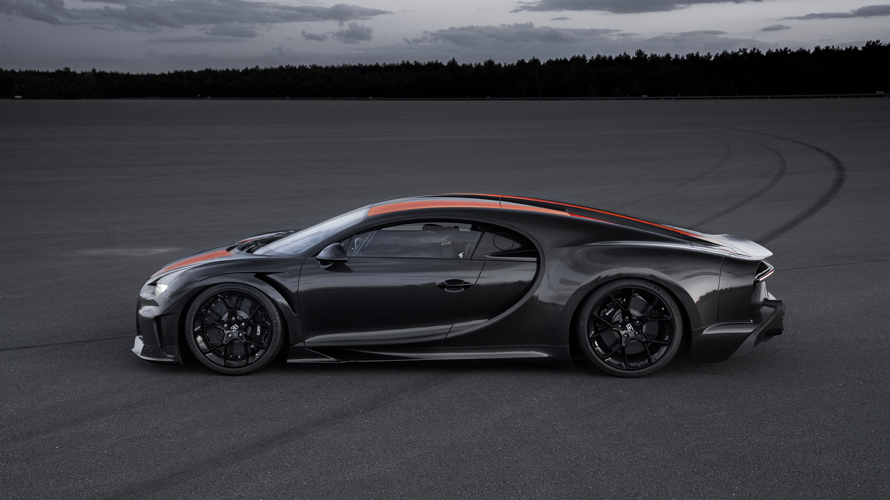
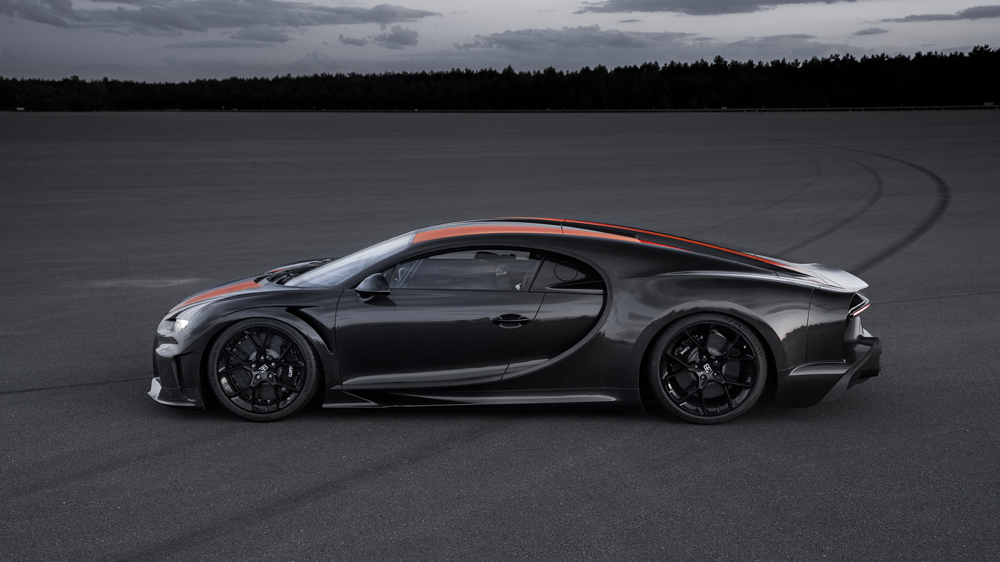

Топ 10 самых быстрых машин в мире 2022

Koenigsegg Jesko Absolut
- v8 Turbo (5.0)
- 1622 л.с (на спец. топливе E85)
- масса 1390 кг
- макс. скорость по расчетам 532км/ч
- макс. скорость на практике неизвестна
Оба варианта «Йеско» оснащены фирменным пятилитровым V8 с самым легким в мире коленвалом. На бензине мотор генерирует 1299 л.с., а на биотопливе E85 – 1625 л.с., то есть заметно больше 1 мегаватта (отсюда и термин «мегакар»). Двигатель агрегатирован с девятиступенчатым роботом собственной разработки Koenigsegg, который очень быстро переключает передачи, выбирая именно ту, что обеспечит максимальное ускорение – эта функция называется Ultimate Power On Demand.
Koenigsegg прямо не называет максимальную скорость Jesko Absolut, но утверждает, что новинка готова сбить корону с головы любого чемпиона – как только представится такая возможность, «в зависимости от условий и места предполагаемого заезда». Ранее сообщалось, специально подготовленный «Йеско» сможет преодолеть скоростной (и психологический) барьер в 500 км/ч, опередив Bugatti Chiron Super Sport 300+.
Перейти на статью...


Hennesey Venom F5
- v8 Turbo (6.6)
- 1842 л.с
- масса 1338 - 1360 кг
- заявленная макс. скорость 500км/ч
- макс. скорость на практике 437км/ч
Hennessey Venom F5 Roadster получил турбированный двигатель V8 Fury объёмом 6,6 л, мощностью 1842 л.с., который работает в паре с 7-ступенчатой роботизированной коробкой передач. Эта связка позволяет достичь максимальной скорости 483 км/ч (300 миль/ч).
Hennessey Venom F5 Roadster получил съёмную крышу массой всего 8 кг, которая выполнена из углепластика и крепится с помощью нескольких болтов и защёлок. Кроме того, двигатель можно рассмотреть под прозрачной крышкой из углепластика и закалённого стекла.
Перейти на статью


Bugatti Chiron Super Sport 300+
- w16 (8.0)
- 1600 л.с
- масса 1978 кг
- макс. скорость на практике
(обычной версии) 490км/ч
От стандартного Chiron версия Super Sport 300+ отличается кузовом: с него убрали все лишнее, чтобы максимально уменьшить сопротивление воздуху, переработали
для оптимального перераспределения воздушных потоков переднюю часть, удлинили на 25 см корму, сделали новые диффузор и выпускную систему с четырьмя патрубками, которые выступают за габарит для уменьшения влияния выхлопных газов на аэродинамику. Кроме того, гиперкар-рекордсмен получил форсированный до 1600 л.с. двигатель W16 (как у Centodieci), другие настройки и программное обеспечение ряда систем.
Перейти на статью

 


SSC Tuatara
- v8 (5.9)
- 1774 л.с (на спец. топливе E85)
- масса 1247 кг
- заявленная макс. скорость 483км/ч
- макс. скорость на практике 475км/ч
В феврале позапрошлого года, презентуя серийную версию суперкара Tuatara, фирма SSC North America заявила, что ее 5,9-литровый V8 развивает 1350 л.с. на бензине и 1750 л.с. на смеси E85. Как выяснилось,
реальная отдача этого мотора еще выше.
Испытания на диностенде показали, что мощность «турбовосьмерки» может достигать почти 1890 л.с. Примечательно, что замер произвела компания Nelson Racing Engines, которая и разработала этот двигатель.
На данный момент SSC Tuatara официально является чемпионом в максимальной скорости среди серийных автомобилей. Еще в начале прошлого года коллекционер гиперкаров Ларри Кэплин на полигоне Johnny Bohmer
Proving Grounds в Космическом центре Кеннеди разогнал личное купе до 450,1 км/ч, двигаясь в одном направлении, и до 460,4 км/ч – в противоположном. Это дало среднее значение в 455,2 км/ч,
что позволило забрать пальму первенства у Koenigsegg Agera RS, чей лучший результат – 447,19 км/ч.
Перейти на статью


Rimac Nevera
- Батарея мощностью 120 кВтч
- 1900 л.с
- масса 1850 кг
- макс. скорость 415км/ч
Напомним, что в движение машину с карбоновым монококом приводят четыре электромотора суммарной мощностью
1914 лошадиных сил и крутящим моментом в 2360 Нм, которые за счет понижающих редукторов превращаются в
13 430 Нм на колесах. До 100 км/ч автомобиль разгоняется за 1,97 секунды. Максимальная скорость достигает
отметки в 412 километров в час. батарея емкостью в 120 кВт*ч позволяет проезжать до 550 км на одной зарядке.
Перейти на статью


McLaren Speedtail
- v8 Turbo (4.0)
- 1050 л.с
- масса 1430 кг
- макс. скорость 403км/ч
Компания McLaren Automotive завершила скоростные испытания нового купе Speedtail. В рамках финальной серии
тестов предсерийный прототип с кодовым обозначением XP2 более 30 раз развил максималку в 403 км/ч на взлетно-посадочной
полосе Космического центра Кеннеди во Флориде.
Это достижение делает Speedtail самым быстрым «Маклареном» в истории бренда. Примечательно, что прежде это
звание принадлежало его духовному предшественнику – легендарному McLaren F1, который в свое время выдал 386,4 км/ч,
став мировым рекордсменом.
Перейти на статью


Aston Martin Valkyrie
- v12 (6.5)
- 1160 л.с
- масса 1130 кг
- макс. скорость 402км/ч
Aston Martin Valkyrie оснащается 6,5-литровым V12 Cosworth, который даже без наддува способен развивать 1 014 л.с. и раскручиваться
до 11 000 об/мин, и электромотором вкупе с системой рекуперации. Общая отдача силовой установки – 1 176 л.с. и 900 Нм.
Но есть у уникального инженерного решения и обратная сторона: мотор придется «капиталить» минимум каждые 100 тысяч км. Владельцам
«Валькирий» придется обращаться на сервисные станции, где блок цилиндров будут проверять на наличие трещин и при необходимости
восстанавливать. Регулярной замене подлежат также поршни и клапана.
Перейти на статью

Koenigsegg Gemera
- 2 литровый двигатель + 3 элек-двигателя
- 1700 л.с
- масса 1850 кг
- макс. скорость 402км/ч
Мегакарами в Koenigsegg называют все свои модели, мощность которых превышает 1 мегаватт или 1360 метрических л.с. В случае с новинкой под
названием Gemera это условие выполнено с большим запасом: заявлены 1,27 мегаватта (свыше 1700 л.с.) и 3500 Нм. Переднюю ось вращают
установленный внутри колесной базы двухлитровый трехцилиндровый двигатель Freevalve с электропневматическими актуаторами привода
клапанов, выдающий 600 л.с. и 600 Нм, и электромотор на 400 л.с. и 500 Нм. Каждое из задних колес приводится отдельным электромотором
на 500 л.с. и 1000 Нм, причем управляются они независимо, что позволяет менять распределение тяги.
Перейти на статью


Koenigsegg Regera
- v8 Turbo (5.0)
- 1500 л.с
- масса 1590 кг
- макс. скорость 410км/ч
Koenigsegg Regera оборудуется продвинутой гибридной силовой установкой. В ее основе лежит V-образная турбированная
бензиновая восьмерка объемом в 5000 кубических сантиметров. Огромный литраж вкупе с современной системой наддува
позволили инженерам выжать 1100 лошадиных сил при 7800 об/мин и 1280 Нм крутящего момента при 4100 об/мин. К коленчатому
валу двигателя был добавлен электромотор на 127 лс и 300 Нм, а на каждом колесе задней оси разместили еще парочку.
Каждый из них выдает 245 лошадей и 260 Нм тяги. В итоге, суммарная отдача такой установки составляет умопомрачительные
1500 коней и 2000 Ньютонов. Этот колоссальный момент переваривает однодиапазонная автоматическая коробка передач довольно
необычной конструкции.
Перейти на статью


Aspark Owl
- Батарея на 64кВтч, 4 элек-двигателя
- 2012 л.с
- масса 1990 кг
- макс. скорость 400км/ч
Aspark Owl снабдили полностью независимой подвеской на двойных поперечных рычагах с
трехпозиционной регулировкой дорожного просвета – от 80 мм до 160 мм, при этом высота
гиперкара составляет всего 99 сантиметров. Углеродкерамические тормоза на передней оси
"Совы" сопровождаются 10-поршневыми суппортами.
Но самое интересное – силовая установка. В детали японцы пока не вдаются,
но известно, что электромоторы Aspark Owl развивают 2 012 л.с. и 2 000 Нм крутящего момента.
Таким образом, "Сова" обскакала даже недавнюю сенсацию – Lotus Evija и претендует на звание
самого мощного автомобиля в мире.
И самого быстрого: 1900-килограммовое купе способно катапультироваться до 60 миль в
час (96 км/ч) всего за 1,69 секунды! 300 км/ч Owl набирает за 10,6 секунды, а расчетная
максимальная скорость гиперкара составляет 400 км/ч. 64-киловаттная батарея обеспечит
запас хода в 450 км, но японцы в будущем обещают снабдить купе и более емкими аккумуляторами.
Перейти на статью